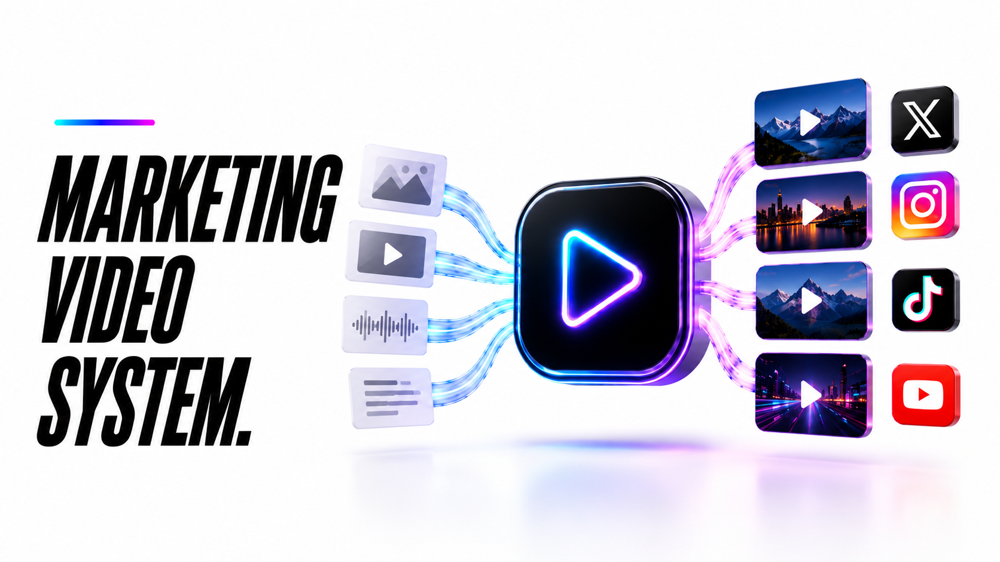
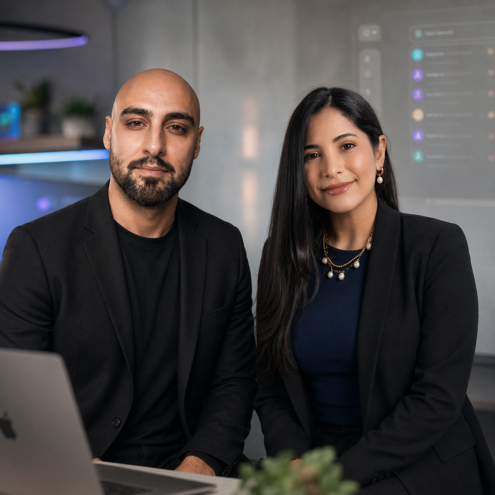

01
Video strategy
Map the offers, audience, visual style, campaign angles, and video formats the system should create.
Ready-to-install AI system
A marketing video system that creates realistic AI videos, scripts, captions, and short-form campaign assets in your brand style, so you can publish more video without a full production team.
Marketing Video System walkthrough
A static walkthrough of how the pieces connect before your team starts using the system.
What gets installed
A marketing video system should turn offers, proof, and campaign ideas into realistic AI video assets: concepts, scripts, prompts, visuals, captions, edits, and a repeatable handoff for publishing.
Map the offers, audience, visual style, campaign angles, and video formats the system should create.
Create believable AI video visuals, scenes, scripts, prompts, and asset directions aligned with the brand.
Generate video scripts, hooks, scenes, captions, thumbnails, and campaign assets without starting from a blank page.
Create video hooks, captions, talking points, CTAs, and platform-specific variations.
Prepare video assets so they can be reviewed, edited, scheduled, or handed off to the right channel.
Review which video angles, hooks, and formats should be repeated, refined, or turned into more campaign assets.

Why it matters
Video is powerful, but production can slow everything down. This system gives your business a repeatable way to create realistic AI videos, scripts, captions, and short-form assets without needing a full production team for every campaign.
The process
Clarify the brand, audience, offers, proof, platforms, and type of videos the system should produce.
Build the prompt structure, script formats, scene directions, caption workflow, and video output process.
Train the system around your visual references, brand tone, real offers, hooks, and platform requirements.
For Growth and Premium, connect video output to review folders, schedulers, publishing tools, or team handoff.
Review real video output, improve prompts, tighten the brand match, and refine what should be created next.
Build options
Choose whether you need AI video assets created for you, or a fuller video workflow with more automation, channels, and campaign support.
Launch discount applied this month.
Best if you want realistic AI video concepts, scripts, prompts, captions, and short-form assets created for you.
For businesses that want a stronger video production workflow with more assets, channel handoff, and optional scheduling support.
For teams that want a larger AI video system with campaign planning, realistic visuals, multi-channel assets, and custom workflow logic.
Limited bonus
Book your demo this week and we will map the first marketing video system your business should use: what AI videos to create, how they should match your brand, what scripts and captions they need, and where the assets should go next.
Proof it works

The video system gave us short-form assets that finally looked aligned with our brand. We stopped treating every Reel like a full production.
The Starter build gave us AI video concepts, scripts, prompts, and captions we could hand to the team immediately.
Growth made the process easier because videos, captions, and handoff steps were organized instead of scattered across messages.
The AI visuals felt much closer to the style we wanted. The prompts were specific enough to avoid generic AI-looking content.
Our campaign videos feel more connected now. The scripts, captions, and visuals all point back to the same offer.
The custom system gave us a repeatable way to turn campaign ideas into video assets without waiting on a full production cycle.
Common questions
It creates realistic brand-matched AI video assets: concepts, scripts, scene prompts, captions, hooks, thumbnails, and short-form campaign materials for Reels, TikTok, Shorts, education, or authority content.
Starter focuses on scripts, prompts, captions, and asset direction. Growth and Premium can include more production workflow, handoff, and scheduling support depending on the tools being used.
Yes. Yes. AI videos, scripts, captions, campaign angles, and approval notes can be prepared for English, Spanish, or bilingual audiences.
The build price is separate from monthly AI video tools, editing tools, storage, schedulers, automation tools, or other third-party services. We confirm the stack before build.
Yes. The website can route leads to Calendly, WhatsApp, email, intake forms, CRM tools, spreadsheets, or a dashboard depending on how your team works.
That is the goal. We build the prompts, references, scripts, and style rules around your brand so the output feels like a real marketing asset, not generic AI filler.
Ready to start?
Book a free demo and we will map the first marketing video system your business should use.